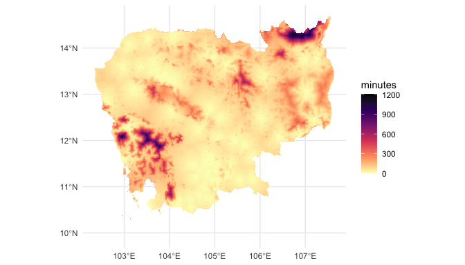

Start tag expected, '<' not found
Start tag expected, '<' not found<GMLEnvelope>
....|-- lowerCorner: 9.9136 102.34
....|-- upperCorner: 14.6903 107.6319Start tag expected, '<' not found

traveltime: an R package to calculate walking and motorised travel time from user locationsGerard E Ryan ![]()
Nick Tierney
Nick Golding
Daniel Weiss
Understanding and mapping the time to travel among locations is useful for many activities from urban planning [@zahavi1974traveltime] to public health [@weiss2020global] and likely a myriad others we haven’t thought of. Here we present a software package — traveltime — written in and for the language R [@Rref]. traveltime enables a user to supply a set of geographic point locations and an extent of interest, and calculate the motorised or walking travel time over that extent. The result is a raster of 30 arcsecond resolution (approximately 0.008333 decimal degrees, or just below 1 km\(^2\) at the equator) where the value in each cell is the lowest travel time in minutes to any of the supplied point locations over the extent of interest.
The work-flow requires two steps:
traveltime provides a spatial interface using object classes from the terra package [@terra]. It accepts points as either data.frame or SpatVector class objects; extents as numeric, SpatExtent, SpatVector, or SpatRaster objects; and return the results as a SpatRaster object. The package uses gdistance [@gdistance2017] to calculate the minimum least-cost-distance for each cell from the points of interest.The travel time is calculated as movement over a ‘friction surface’ based-on the surfaces generated by @weiss2020global available via the malariaAtlas package [@pfeffer2018malariaatlas]. Rather than house and manipulate these surfaces independently, traveltime relies on malariaAtlas to download the surfaces for the extent of interest.
Start tag expected, '<' not found
Start tag expected, '<' not found<GMLEnvelope>
....|-- lowerCorner: 9.9136 102.34
....|-- upperCorner: 14.6903 107.6319Start tag expected, '<' not foundAlthough this article is intended to be the key reference for the traveltime package, any citations of it should also be citing the underlying work by @weiss2018global; @weiss2020global.
Global maps of travel time to cities [@weiss2018global] and health care facilities [@weiss2020global] have generated significant interest and use. Collectively @weiss2018global ; @weiss2020global have over 1300 citations (Google Scholar, at 10th December 2024), and the city data set is available to R users through the widely-used geodata package [@geodata]. There is clear demand for these type of products.
@weiss2020global and colleagues made their code available as an R script to allow for reproduction and extension of their analyses (https://malariaatlas.org/wp-content/uploads/2022/11/R_generic_accessibilty_mapping_script_2020-1.txt ). To further enable extension of this work, here we have developed an R package based on that code to seamlessly calculate the travel time from any arbitrary set of locations.
Other R packages produce superficially similar though not identical functionality. At least three R packages provide interfaces to the https://www.TravelTime.com API [@traveltimeapi; @traveltimeR; @rtraveltime; @traveltime_gh]. The TravelTime.com platform provides travel time and routes between pairs of locations, and ‘isochron’ polygons, which are areas reachable within a given time from a given location. The latter is most comparable to what the traveltime package achieves,
THIS NEXT SENTENCE SUX - EXPLAIN WHY ITS THE SAME AND GIVE A BETTER EXPLANATION OF THE DIFFERENCE.
however without complete spatial coverage, or distance to the nearest of a given point. Furthermore, it requires access keys, caps queries, and uses an external server for calculations, which add friction to the use experience.
With traveltime, we provide internally complete software to estimate motorised or walking travel time from any number of user-supplied locations, across a complete area of interest.
In this example workflow, we wish to calculate the walking travel time to the nearest mass transit station across the island nation of Singapore — specifically MRT and LRT stations — and create a map of this.
To do this we will need two items of information: - our are of interest - in this case, a map of Singapore - the locations of MRT and LRT stations
We can download a national-level polygon of Singapore from the GADM [@gadm] database using the geodata package [@geodata]. Here we download only the national boundary (level = 0) and at a low resolution (resolution = 2).
library(terra)
library(geodata)
library(tidyterra)
sin <- gadm(
country = "Singapore",
level = 0,
path = tempdir(),
resolution = 2
)
ggplot() +
geom_spatvector(
data = sin
) +
# scale_fill_viridis_c(
# option = "A",
# direction = -1,
# na.value = "transparent"
# ) +
scale_fill_manual(na.value = "transparent") +
theme_minimal()The the stations data set included in the traveltime package is a 563 $*$ 2 matrix containing the longitude (x) and latitude (y) of all LRT and MRT station exits in Singapore from @singdata:2024.
library(traveltime)
head(stations) x y
[1,] 103.9091 1.334922
[2,] 103.9335 1.336555
[3,] 103.8493 1.297699
[4,] 103.8508 1.299195
[5,] 103.9094 1.335311
[6,] 103.9389 1.344999So now we have the two items of data we require. The next step is to download a friction surface for our area of interest.
We can pass in our basemap sin, a SpatVector, directly as the extent. It would also be possible pass in a SpatRaster with extent equal to our area of interest, or specify coordinates either as a vector, matrix, or SpatExtent.
We’re interested in walking time from a station, so we’ll download the walking friction surface by specifying surface = "walk2020". Alternatively, we could use "motor2020" for motorised travel if that was of interest.
We’re also only interested in walking on land so we mask out areas outside of sin, that are within the extent of the raster:
library(traveltime)
friction_singapore <- get_friction_surface(
surface = "walk2020",
extent = sin
)|>
mask(sin)<GMLEnvelope>
....|-- lowerCorner: 1.1664 103.6091
....|-- upperCorner: 1.4714 104.0858Start tag expected, '<' not foundfriction_singaporeclass : SpatRaster
dimensions : 37, 57, 1 (nrow, ncol, nlyr)
resolution : 0.008333333, 0.008333333 (x, y)
extent : 103.6083, 104.0833, 1.166667, 1.475 (xmin, xmax, ymin, ymax)
coord. ref. : lon/lat WGS 84 (EPSG:4326)
source(s) : memory
varname : Accessibility__202001_Global_Walking_Only_Friction_Surface_1.1664,103.6091,1.4714,104.0858
name : friction_surface
min value : 0.01200000
max value : 0.06192715 Taking a look at these data, below we plot the friction surface raster friction_singapore, with the vector boundary of sin as a dashed grey line, and stations as grey points. Higher values of friction indicate more time travelling across a given cell.
library(tidyterra)
library(ggplot2)
ggplot() +
geom_spatraster(
data = friction_singapore
) +
geom_spatvector(
data = sin,
fill = "transparent",
col = "grey50"
) +
geom_point(
data = stations,
aes(
x = x,
y = y
),
col = "grey60",
size = 0.5
) +
scale_fill_viridis_c(
option = "A",
na.value = "transparent",
direction = -1
) +
labs(
fill = "Friction",
x = element_blank(),
y = element_blank()
) +
theme_minimal()
With all the data collected, the function calculate_travel_time takes the friction surface friction_singapore and the locations of interest stations and returns a SpatRaster of walking time in minutes to each cell from the nearest station.
travel_time_sin <- calculate_travel_time(
friction_surface = friction_singapore,
points = stations
)
travel_time_sinclass : SpatRaster
dimensions : 37, 57, 1 (nrow, ncol, nlyr)
resolution : 0.008333333, 0.008333333 (x, y)
extent : 103.6083, 104.0833, 1.166667, 1.475 (xmin, xmax, ymin, ymax)
coord. ref. :
source(s) : memory
name : travel_time
min value : 0
max value : Inf Here are those results as in a map:
ggplot() +
geom_spatraster(
data = travel_time_sin
) +
scale_fill_viridis_c(
option = "A",
direction = -1,
na.value = "transparent"
) +
theme_minimal() +
labs(fill = "minutes") +
geom_spatvector(
data = sin,
fill = "transparent",
col = "grey20"
)
Note that the above raster include infinite (Inf) values. In Figure 3, a number of islands to the south are shown as cells unconnected with the mainland. These raster cells for these islands appear absent in Figure 4. Because they are not connected, the calculated travel time is infinite, and so these cells do not appear in the plot Figure 4.
The traveltime package is immediately suitable to a range of applications where travel to custom locations of interest. But we nonetheless see opportunities to build the package utility into the future through two mechanisms: capability to distribute more friction surfaces, and additional methods to handle large spatial extents.
Firstly, traveltime currently has access to friction surfaces for 2020, both at 30 arc-second resolution. As landscapes are not dynamic, it may be useful to incorporate updated versions of these friction surfaces if and when they are available. Furthermore, although the resolution of these data is likely to be suitable for larger landscape foci, higher resolution data may be helpful for more locally focussed analyses. For instance, although the example here was chosen for it’s simplicity and low computational demands, a 5 km cell size is a relatively large area to walk across, and thus actual waking times are likley to vary significantly within each cell.
At the other end of the scale, the package can require large amounts of memory for analyses over large landscapes (e.g. one analyses over Africa required ~ 72 GB RAM). Developing methods to handle large landscapes with less memory would be helpful to make such analyses accessible to those without access to larger computing resources.